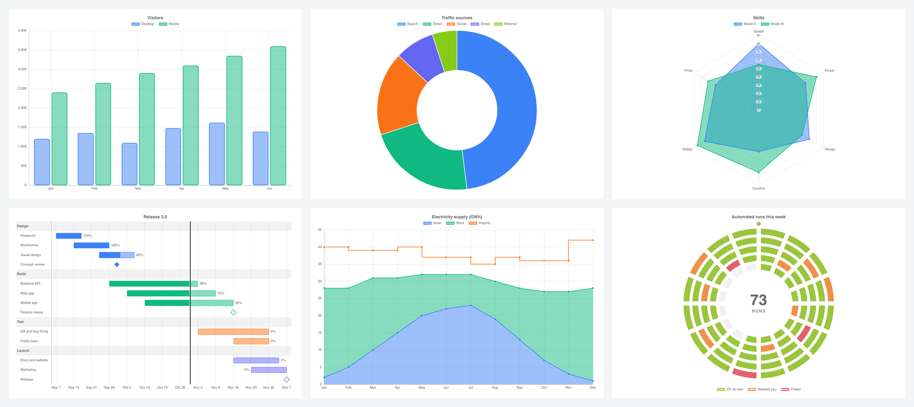
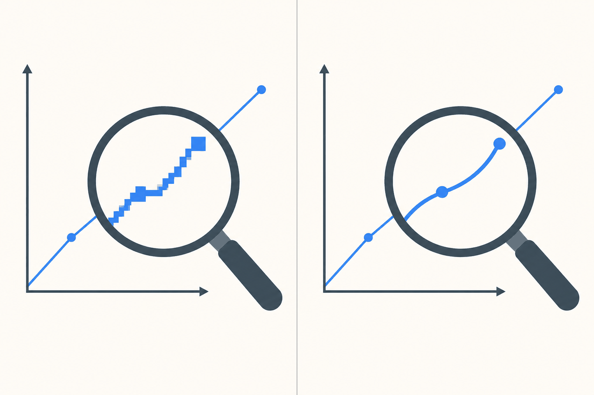

Drawing charts with Slint's own elements

I love building apps with Slint. It is my favourite way to write a user interface in Rust. But the first time I needed a line chart, I found out there isn't one.
This post is about my journey to close that gap. First the options you have for charts in Slint today, and where each one fell short of what I needed. Then I'll show how SlintPlot, the library I ended up writing, draws a chart.
What makes Slint good
The UI lives in its own small language. You describe the layout in a .slint file, and the compiler turns it into Rust at build time. A misspelled property or a wrong type fails the build. The live preview shows the UI as you type, so designing a screen doesn't mean waiting for cargo build.
Property bindings are the part I like most. You write width: parent.width / 2 and it stays true. Nobody calls a refresh function. That keeps the Rust side small, because it only has to hold the data and the logic.
It is light, too. The same code runs on Windows, macOS, Linux, the browser through WebAssembly, and microcontrollers with a few hundred kilobytes of RAM. There is no web view and no JavaScript engine inside the app.
So when I say charts are missing, I mean it as someone who wants to keep using Slint. I want charts that work the way the rest of it does.
Charts in Slint today
I'm not the only one who has looked. There is a GitHub discussion asking how to build a line or radar chart, and a thread in the plotters project asking for Slint support. As far as I can tell, these are the choices.
| Option | How it works | Where it falls short |
|---|---|---|
| Render to an image | A crate like plotters draws the plot into a pixel buffer, and Slint shows it as an Image. Slint's own plotter example does this. | The chart is a bitmap. It blurs when the scale changes, ignores the app's theme, and knows nothing about hover, focus or clicks. Every change redraws the whole picture. |
| Draw it by hand | You place Path and Rectangle elements in .slint and compute their positions in your own Rust code. | Fine for one simple chart. Then you need tick placement, stacking, legends, tooltips and hit testing, and you are writing a chart library inside your app. |
| Build a private library | KDAB describes packaging chart components as a reusable Rust crate, with the UI in .slint and the rendering in Rust. | It proves the approach works, but it is weeks of work before the first chart ships, and it's your code to maintain. |
| Leave Slint for the chart | Show the chart in a different toolkit or a web view next to the Slint UI. | Two rendering stacks in one app, and the chart never looks or behaves like the rest of the window. |

Other toolkits don't make you choose. Qt has Qt Charts, Flutter and Avalonia have several chart packages. You declare a chart, bind data to it and move on.
Why I started SlintPlot
That gap is the reason this project exists. I wanted to write this in a .slint file and have it work:
LineChart {
labels: ["Jan", "Feb", "Mar", "Apr"];
datasets: [{ label: "2026", values: [15, 22, 13, 24] }];
}I also wanted the chart to be a normal part of the UI. It should stay sharp at any scale and follow dark mode. It should update when a row in the model changes, and respond to the mouse and keyboard like any other element.
An image can't do that, so I set one rule early. SlintPlot charts contain no images. Every line, bar, tick and label is an ordinary Slint Path, Rectangle or Text. Rust only does the arithmetic.
The rest of this post explains how that split works, why Slint's pure callbacks keep the charts up to date with no update code, and what it costs. You can try the result in the browser gallery before reading on.
Geometry in Rust, drawing in Slint
A chart needs two kinds of work. One is arithmetic, such as picking nice axis ticks, stacking series, fitting Bézier curves and laying out a treemap. The other is drawing and interaction.
The Slint language is good at the second and poor at the first. It has no loops, so you can't write a tick algorithm in it. Rust is the opposite case. So each side does what it's good at, and a Slint global called ChartEngine sits between them.
ChartEngine declares the callbacks, and every one of them is pure. A chart component calls them from property bindings. The slintplot::register! macro implements them in Rust. The Rust code behind the macro is a plain library with zero dependencies. It takes numbers and returns numbers and strings.
One line chart, from data to Path
Here is the path one line chart takes. I trimmed the code.
The engine declares the callback and the shape of its answer:
export struct ChartSeries {
kind: ChartKind,
color: color,
line: string, // SVG path commands
area: string,
points: [ChartPoint],
columns: [ChartColumn],
}
export global ChartEngine {
pure callback layout(request: ChartLayoutRequest) -> ChartLayout;
// ...and one more for each computation
}The chart component binds a private property to that callback. The request carries everything the result depends on, including the plot size in pixels:
private property <ChartLayout> chart: ChartEngine.layout({
kind: root.kind,
datasets: root.datasets,
labels: root.labels,
width: plot.width / 1px,
height: plot.height / 1px,
y-min: axis.min,
y-max: axis.max,
palette: ChartTheme.colors,
// ...
});On the Rust side, register! turns the Slint structs into plain ones and calls the layout function. That function ends up in path.rs, which writes path commands into a string:
pub fn line(points: &[Point], tension: f32, y_bounds: (f32, f32)) -> String {
let points = &clip(points, y_bounds);
let mut out = String::new();
let Some(&(x0, y0)) = points.first() else {
return out;
};
let _ = write!(out, "M {x0:.2} {y0:.2}");
append_segments(&mut out, points, tension, y_bounds);
out
}Back in Slint, the component draws one Path per series and hands it that string:
for series in chart.series: Path {
viewbox-width: plot.width / 1px;
viewbox-height: plot.height / 1px;
fit: fill;
commands: series.line;
stroke: series.color;
stroke-width: ChartTheme.line-width;
stroke-line-join: round;
stroke-line-cap: round;
}Slint's Path accepts SVG path syntax in commands, which is what makes a string a good enough interface. The coordinates are already plot pixels, so the viewbox is the plot size and nothing needs scaling.
Bars, gridlines and point markers work the same way, except Rust returns positions and Slint draws a Rectangle for each. Tick labels are Text elements, so they use the app's font and the theme's colours without any extra code.
Why pure does most of the work
Nothing in the walkthrough tells the chart to redraw. There is no update() call and no resize handler.
Slint tracks which properties a binding reads and runs the binding again when one of them changes. A pure callback promises it has no side effects, so Slint lets you call it from a binding like any other expression. The chart property above reads the plot width, the datasets and the palette. Resize the window, switch to dark mode or change the data, and Slint calls layout again by itself.
Data inside a model needs one more step. A binding that receives a model doesn't depend on the rows inside it. So the macro reads rows through Slint's ModelTracker:
fn tracked<T: Clone + 'static>(model: &::slint::ModelRc<T>) -> Vec<T> {
model.model_tracker().track_row_count_changes();
(0..model.row_count())
.filter_map(|row| {
model.model_tracker().track_row_data_changes(row);
model.row_data(row)
})
.collect()
}Each row the layout reads becomes a dependency of the binding that asked. Set one value in a VecModel and that chart recomputes. Other charts on the same screen don't.
The same trick handles large datasets. Values aren't copied up front. The layout gets a closure that fetches a row on demand and registers the dependency as it goes. A time series zoomed in on one hour of a year of data finds its window by binary search and reads only those rows.
When a series still has more than two points per pixel column, the layout switches to min-max decimation. It returns one vertical span per column instead of a path, and Slint draws those as rectangles. The line looks the same and the element count stays bounded by the plot width.
What it costs
The design has some downsides.
- Rust only. The geometry is Rust, so you can't use the library from Slint's C++, JavaScript or Python APIs. Each language would need its own glue code.
- No live preview. Slint's live preview and SlintPad run
.slintfiles without your Rust code. The callbacks have no implementation there, so charts show up empty. You have to run the app to see them. And as we all know, compiling Rust can take longer than we'd like. - A wide interface. Many callbacks and structs cross between Slint and Rust. Every new chart type adds to both sides, and I have to keep the two in step.
- Strings as geometry. Rust formats a path string and Slint parses it again on every recompute. It hasn't shown up as a bottleneck in my stress tests, but it is work a typed path would avoid.
- Renderer support. The software renderer needs Slint's
software-renderer-pathfeature turned on, or it draws no chart lines. I haven't tested builds for microcontrollers yet.
I'd still make the same choice. The Rust core never mentions a Slint type, so I can unit test and fuzz it without starting a UI. And the charts are built from the same elements as the rest of the UI, so theme, scaling and focus need no special code.
Try it
The gallery runs in the browser through WebAssembly and shows all 25 chart types with live data. To run it natively:
cargo install slintplot-galleryAdding a chart to your own app takes a build.rs entry, one exported global and one macro call:
import { LineChart, ChartEngine } from "@slintplot";
export { ChartEngine }
export component App inherits Window {
LineChart {
title: "Revenue";
labels: ["Jan", "Feb", "Mar", "Apr"];
datasets: [{ label: "2026", values: [15, 22, 13, 24], tension: 0.4 }];
}
}slint::include_modules!();
fn main() -> Result<(), slint::PlatformError> {
let app = App::new()?;
slintplot::register!(app);
app.run()
}The full setup is in the documentation, and the source is on GitHub. SlintPlot needs Slint 1.18 and Rust 1.88 or later. It is free under the GPLv3 or the PolyForm Noncommercial licence, with a commercial licence for closed-source products.
SlintPlot is new, and I haven't decided what to build next. That depends on what people need. If you use Slint and a chart type or feature is missing, or a chart breaks on your data, open an issue on GitHub. I read every one.
And if you build something with it, show me. I started this because I wanted Slint apps to have good charts, and I'd like to see yours.